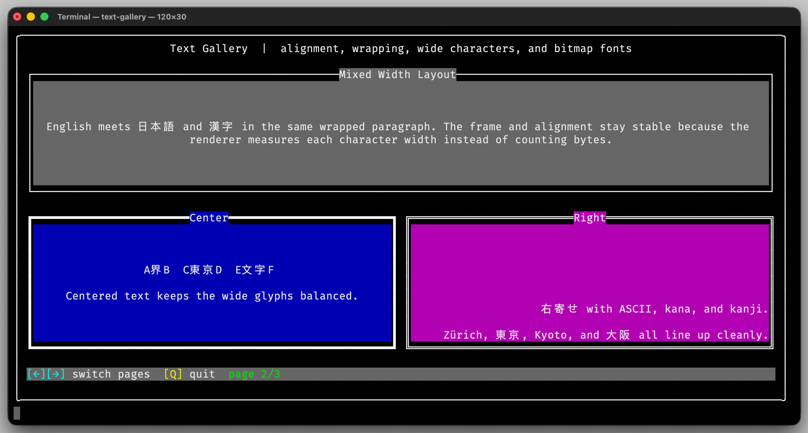

Text
The text classes provide utilities for constructing, formatting, and rendering colored text in terminal buffers. They support mixed styles, Unicode-aware layout, and animated text effects.
At the lowest level, Char represents a single colored terminal cell.
Higher-level classes such as String and Text build on this
foundation to describe larger text fragments and layout-aware text
blocks.
Usage
Building Colored Text Fragments
String stores a sequence of colored terminal characters. This makes
it useful for prompts, status bars, and other mixed-style text where
individual characters may use different colors.
auto footer = String{};
for (const auto &character : String{"[Q]"}) {
footer.append(character.withColorOverlay(Color{fg::BrightYellow, bg::BrightBlack}));
}
for (const auto &character : String{" quit"}) {
footer.append(character.withColorOverlay(Color{fg::BrightWhite, bg::BrightBlack}));
}
Each Char in the sequence can carry its own color, allowing flexible
construction of styled text fragments.
When you recolor existing Char values with withColorOverlay(), inherited
components keep the original character color while default components reset
that part to the terminal default.
When String is built from UTF-8 or UTF-32 text, control codes are filtered
out automatically except for tab and newline.
Describing a Text Block
Text describes a complete text element for buffer rendering. It
combines the content with layout information such as the target
rectangle, alignment, font, and animation settings.
auto title = Text{String{"COLOR TERM"}, Rectangle{0, 0, 60, 6}, Alignment::Center};
title.setFont(Font::defaultAscii());
title.setColorSequence(ColorSequence{
Color{fg::BrightBlue, bg::Black},
Color{fg::BrightCyan, bg::Black},
Color{fg::BrightMagenta, bg::Black},
Color{fg::BrightYellow, bg::Black},
});
title.setAnimation(TextAnimation::ColorDiagonal);
buffer.drawText(title, animationCycle);
Because Text integrates with the geometry and color systems, it
supports wrapped paragraphs, Unicode-aware layout, animated titles,
and large bitmap fonts.
{kind=link}

The text-gallery demo shows wrapped text, mixed-width Unicode
text, and animated titles built with these classes.
Interface
-
class Char
Represents a character string with foreground and background colors.
Used by the UI code to render colored text blocks on the console.
Public Functions
-
constexpr Char() noexcept = default
Construct an empty block character using inherited colors.
-
inline explicit constexpr Char(const char32_t codePoint) noexcept
Construct a block character from a single Unicode code point using inherited colors.
- Parameters:
codePoint – The base Unicode code point.
-
inline constexpr Char(const char32_t codePoint, const Color color) noexcept
Construct a block character from a single Unicode code point and a color.
- Parameters:
codePoint – The base Unicode code point.
color – The color for the character.
-
inline constexpr Char(const char32_t codePoint, const Foreground fgColor, const Background bgColor) noexcept
Construct a block character from a single Unicode code point and explicit colors.
- Parameters:
codePoint – The base Unicode code point.
fgColor – The foreground color.
bgColor – The background color.
-
inline constexpr Char(const char32_t codePoint, const Foreground::Hue fgColor, const Background::Hue bgColor) noexcept
This is an overloaded member function, provided for convenience. It differs from the above function only in what argument(s) it accepts.
-
inline constexpr Char(const char32_t codePoint, const Foreground fgColor) noexcept
This is an overloaded member function, provided for convenience. It differs from the above function only in what argument(s) it accepts.
-
inline constexpr Char(const char32_t codePoint, const Foreground::Hue fgColor) noexcept
This is an overloaded member function, provided for convenience. It differs from the above function only in what argument(s) it accepts.
-
inline constexpr Char(const char32_t codePoint, const Background bgColor) noexcept
This is an overloaded member function, provided for convenience. It differs from the above function only in what argument(s) it accepts.
-
inline constexpr Char(const char32_t codePoint, const Background::Hue bgColor) noexcept
This is an overloaded member function, provided for convenience. It differs from the above function only in what argument(s) it accepts.
-
explicit Char(std::string_view charStr)
Construct a block character with inherited colors.
- Parameters:
charStr – The UTF-8 encoded text to display.
- Throws:
std::invalid_argument – If the text is not valid UTF-8, contains U+0000, or uses more than three code points.
-
explicit Char(std::u32string_view charStr)
Construct a block character with inherited colors.
- Parameters:
charStr – The UTF-32 encoded text to display.
- Throws:
std::invalid_argument – If the text contains U+0000 or uses more than three code points.
-
explicit Char(const char32_t *charStr)
Construct a block character with inherited colors.
- Parameters:
charStr – The zero-terminated UTF-32 encoded text to display.
- Throws:
std::invalid_argument – If the text contains U+0000 or uses more than three code points.
-
Char(std::string_view charStr, Foreground fgColor, Background bgColor)
Construct a block character with explicit text and colors.
- Parameters:
charStr – The UTF-8 encoded text to display.
fgColor – The foreground color.
bgColor – The background color.
-
Char(std::string_view charStr, Foreground::Hue fgColor, Background::Hue bgColor)
This is an overloaded member function, provided for convenience. It differs from the above function only in what argument(s) it accepts.
-
Char(std::string_view charStr, Foreground fgColor)
This is an overloaded member function, provided for convenience. It differs from the above function only in what argument(s) it accepts.
-
Char(std::string_view charStr, Foreground::Hue fgColor)
This is an overloaded member function, provided for convenience. It differs from the above function only in what argument(s) it accepts.
-
Char(std::string_view charStr, Background bgColor)
This is an overloaded member function, provided for convenience. It differs from the above function only in what argument(s) it accepts.
-
Char(std::string_view charStr, Background::Hue bgColor)
This is an overloaded member function, provided for convenience. It differs from the above function only in what argument(s) it accepts.
-
Char(std::string_view charStr, Color color)
Construct a block character with explicit text and colors.
- Parameters:
charStr – The UTF-8 encoded text to display.
color – The color of the block.
- Throws:
std::invalid_argument – If the text is not valid UTF-8, contains U+0000, or uses more than three code points.
-
Char(std::u32string_view charStr, Foreground fgColor, Background bgColor)
Construct a block character with explicit text and colors.
- Parameters:
charStr – The UTF-32 encoded text to display.
fgColor – The foreground color.
bgColor – The background color.
-
Char(std::u32string_view charStr, Foreground::Hue fgColor, Background::Hue bgColor)
This is an overloaded member function, provided for convenience. It differs from the above function only in what argument(s) it accepts.
-
Char(std::u32string_view charStr, Foreground fgColor)
This is an overloaded member function, provided for convenience. It differs from the above function only in what argument(s) it accepts.
-
Char(std::u32string_view charStr, Foreground::Hue fgColor)
This is an overloaded member function, provided for convenience. It differs from the above function only in what argument(s) it accepts.
-
Char(std::u32string_view charStr, Background bgColor)
This is an overloaded member function, provided for convenience. It differs from the above function only in what argument(s) it accepts.
-
Char(std::u32string_view charStr, Background::Hue bgColor)
This is an overloaded member function, provided for convenience. It differs from the above function only in what argument(s) it accepts.
-
Char(std::u32string_view charStr, Color color)
Construct a block character with explicit text and colors.
- Parameters:
charStr – The UTF-32 encoded text to display.
color – The color of the block.
- Throws:
std::invalid_argument – If the text contains U+0000 or uses more than three code points.
-
Char(const char32_t *charStr, Foreground fgColor, Background bgColor)
Construct a block character with explicit text and colors.
- Parameters:
charStr – The zero-terminated UTF-32 encoded text to display.
fgColor – The foreground color.
bgColor – The background color.
-
Char(const char32_t *charStr, Foreground::Hue fgColor, Background::Hue bgColor)
This is an overloaded member function, provided for convenience. It differs from the above function only in what argument(s) it accepts.
-
Char(const char32_t *charStr, Foreground fgColor)
This is an overloaded member function, provided for convenience. It differs from the above function only in what argument(s) it accepts.
-
Char(const char32_t *charStr, Foreground::Hue fgColor)
This is an overloaded member function, provided for convenience. It differs from the above function only in what argument(s) it accepts.
-
Char(const char32_t *charStr, Background bgColor)
This is an overloaded member function, provided for convenience. It differs from the above function only in what argument(s) it accepts.
-
Char(const char32_t *charStr, Background::Hue bgColor)
This is an overloaded member function, provided for convenience. It differs from the above function only in what argument(s) it accepts.
-
Char(const char32_t *charStr, Color color)
Construct a block character with explicit text and colors.
- Parameters:
charStr – The zero-terminated UTF-32 encoded text to display.
color – The color of the block.
- Throws:
std::invalid_argument – If the text contains U+0000 or uses more than three code points.
-
bool operator==(const Char &other) const noexcept = default
Compare two terminal characters for equality.
-
bool operator!=(const Char &other) const noexcept = default
Compare two terminal characters for inequality.
-
std::string charStr() const
Get the character string as UTF-8 text.
- Returns:
A UTF-8 encoded copy of the stored character sequence.
-
inline constexpr uint32_t mainCodePoint() const noexcept
Get the leading Unicode code point.
- Returns:
The base code point, or
0if this character is empty.
-
inline constexpr const std::array<char32_t, 3> &codePoints() const noexcept
Get the stored Unicode code points.
Unused entries are set to
0.
-
inline constexpr std::size_t codePointCount() const noexcept
Get the number of stored Unicode code points.
-
int displayWidth() const noexcept
Get the display width on a terminal in cells.
-
std::size_t byteCount() const noexcept
Get the number of UTF-8 bytes needed to encode this character.
-
void appendTo(std::string &buffer) const noexcept
Append the UTF-8 representation to an existing buffer.
- Parameters:
buffer – The destination buffer.
-
Char withCombining(char32_t codePoint) const
Create a character with an additional combining code point appended.
- Parameters:
codePoint – The combining code point to append.
- Throws:
std::invalid_argument – If
codePointis a control code, is not zero-width, or if this character already stores three code points.- Returns:
A copy of this character with the combining code point appended.
-
Char withColorOverlay(Color color) const
Create a character with the given colors applied as an overlay.
- Parameters:
color – The color override to apply.
- Returns:
A copy of this character with the adjusted colors. If the applied colors contain
Inherited, the existing component from this character is kept unchanged.
-
Char withColorReplaced(Color color) const noexcept
Create a character with the given color replacing the stored color.
- Parameters:
color – The replacement color.
- Returns:
A copy of this character with exactly
color.
-
Char withBaseColor(Color color) const noexcept
Create a character with a base color underneath the stored color.
- Parameters:
color – The base color.
- Returns:
A copy of this character where this character color overlays
color.
-
bool isSpacing() const noexcept
Test if this character is spacing.
Tests for space, tab, newline, and CR.
-
bool renderedEquals(const Char &other, bool colorEnabled = true) const noexcept
Compare how two characters would appear on screen.
Code points must match exactly. When
colorEnabledistrue, inherited color components are treated as the terminal default color before comparing.- Parameters:
other – The character to compare with.
colorEnabled –
trueto include colors in the comparison.
- Returns:
trueif both characters render identically.
-
constexpr Char() noexcept = default
-
class String
A terminal string represented as a sequence of
Charvalues.Public Types
Public Functions
-
String() = default
Create an empty terminal string.
-
explicit String(std::string_view str, Color color = {})
Create a terminal string from UTF-8 text.
- Parameters:
str – The UTF-8 text to split into terminal characters.
color – The color to use for the characters. Control codes are ignored except for tab and newline.
- Throws:
std::invalid_argument – If the text is not valid UTF-8 or contains an unsupported character sequence.
-
explicit String(std::u32string_view str, Color color = {})
Create a terminal string from UTF-32 text.
- Parameters:
str – The UTF-32 text to split into terminal characters.
color – The color to use for the characters. Control codes are ignored except for tab and newline.
- Throws:
std::invalid_argument – If the text contains an unsupported character sequence.
-
inline Char operator[](const size_t index) const noexcept
Access one character without bounds checking.
- Parameters:
index – The character index.
- Returns:
A copy of the character at
index.
-
inline Char &operator[](const size_t index) noexcept
Access one character without bounds checking.
- Parameters:
index – The character index.
- Returns:
A mutable reference to the character at
index.
-
inline String &operator+=(const Char &character) noexcept
Append one character to this string.
- Parameters:
character – The character to append.
- Returns:
Reference to this string.
-
inline String &operator+=(const String &other) noexcept
Append another terminal string to this string.
- Parameters:
other – The string to append.
- Returns:
Reference to this string.
-
inline String operator+(const Char &character) const noexcept
Create a new string with one appended character.
- Parameters:
character – The character to append.
- Returns:
The concatenated string.
-
inline String operator+(const String &other) const noexcept
Create a new string with another appended string.
- Parameters:
other – The string to append.
- Returns:
The concatenated string.
-
inline size_t size() const noexcept
Get the number of stored characters.
-
int displayWidth() const noexcept
Get the width of the string in terminal cells.
- Returns:
The sum of all character display widths.
-
inline Char at(const size_t index) const
Access one character with bounds checking.
- Parameters:
index – The character index.
- Returns:
A copy of the character at
index.
-
inline bool empty() const noexcept
Test if this string is empty.
-
inline auto begin() noexcept
Get an iterator to the first character.
-
inline auto end() noexcept
Get an iterator past the last character.
-
inline auto begin() const noexcept
Get a const iterator to the first character.
-
inline auto end() const noexcept
Get a const iterator past the last character.
-
inline auto cbegin() const noexcept
Get a const iterator to the first character.
-
inline auto cend() const noexcept
Get a const iterator past the last character.
-
inline auto rbegin() noexcept
Get a reverse iterator to the last character.
-
inline auto rend() noexcept
Get a reverse iterator past the first character.
-
inline auto rbegin() const noexcept
Get a const reverse iterator to the last character.
-
inline auto rend() const noexcept
Get a const reverse iterator past the first character.
-
inline auto crbegin() const noexcept
Get a const reverse iterator to the last character.
-
inline auto crend() const noexcept
Get a const reverse iterator past the first character.
-
inline void reserve(const size_t size) noexcept
Reserve storage for at least the given number of characters.
- Parameters:
size – The requested capacity.
-
inline void clear() noexcept
Remove all characters from this string.
-
template<PrintableArg... Args>
inline void append(Args... args) noexcept Append elements to this string.
This works similar to
Terminal::print(). If you add a color, this color is “active” for all following characters in the same call. Just adding a color does not change the string.- Parameters:
args – The arguments to append.
-
std::vector<String> splitWords() const noexcept
Split the string into words at space, tab, carriage return, or newline characters.
- Returns:
A sequence of words.
-
std::vector<String> wrapIntoLines(int width) const noexcept
Wrap this string into lines that have a maximum display width.
Paragraph breaks from newline characters are preserved as blank lines between paragraphs.
- Parameters:
width – The maximum terminal width in cells. Must be greater than zero.
- Returns:
A sequence of lines.
-
String() = default
-
using erbsland::cterm::BlockStringLines = std::vector<String>
A sequence of wrapped terminal text lines.
-
class Text
Describes a text block to render into a
Buffer.Public Functions
-
Text() = default
Create an empty text description.
-
inline Text(String text, Rectangle rect, const Alignment alignment = Alignment::TopLeft) noexcept
Create a text description for the given content and target rectangle.
- Parameters:
text – The text content to render.
rect – The target rectangle.
alignment – The text alignment inside the rectangle.
-
inline const ColorSequence &colorSequence() const noexcept
Access the optional text color sequence.
-
inline Color color() const noexcept
Get the first text color from the configured sequence.
- Returns:
The first sequence color, or the inherited color if no sequence is configured.
-
inline const FontPtr &font() const noexcept
Access the optional font. If this is empty, regular text rendering is used.
-
inline TextAnimation animation() const noexcept
Access the animation mode.
-
inline void setColorSequence(ColorSequence colorSequence) noexcept
Replace the text color sequence.
-
inline void setAnimation(const TextAnimation animation) noexcept
Change the animation mode.
-
Text() = default